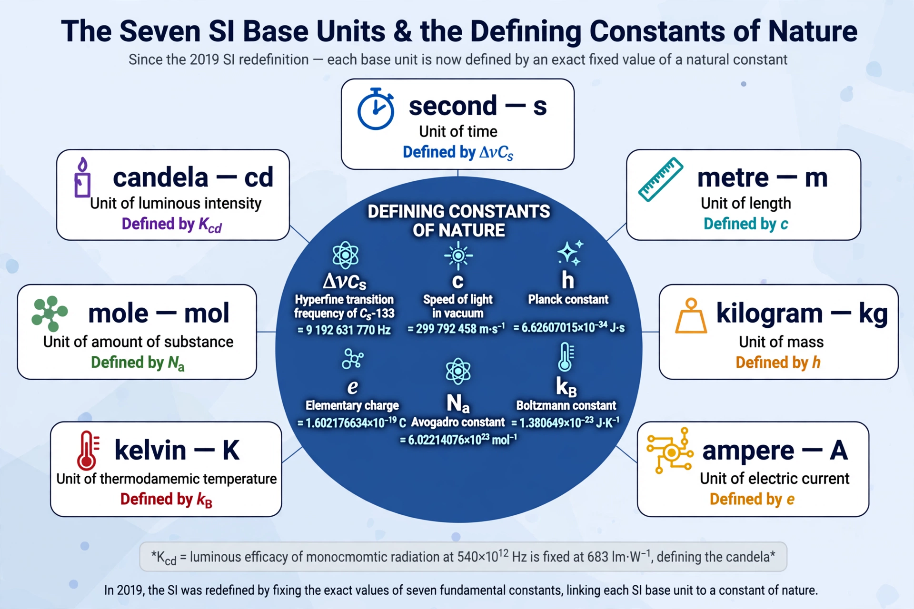

International System of Units

The International System of Units, internationally known by the abbreviation SI (from the French Système international d'unités), is the modern form of the metric system and the world's most widely used system of measurement. It is maintained by the International Bureau of Weights and Measures (BIPM) under the Metre Convention of 1875. The SI comprises seven base units — the second, metre, kilogram, ampere, kelvin, mole, and candela — from which all other units are derived.
| Established | 1960 (11th General Conference on Weights and Measures) |
|---|---|
| Base units | Second, metre, kilogram, ampere, kelvin, mole, candela |
| Governed by | BIPM / CGPM, under the Metre Convention (1875) |
Defining constants
Since the 2019 revision of the SI, every unit is defined by fixing the numerical value of a constant of nature: the caesium hyperfine transition frequency defines the second; the speed of light in vacuum, the metre; the Planck constant, the kilogram; the elementary charge, the ampere; the Boltzmann constant, the kelvin; the Avogadro constant, the mole; and the luminous efficacy of radiation of a specified frequency, the candela. The 2019 revision retired the last physical artefact definition — the International Prototype of the Kilogram, a platinum–iridium cylinder kept at Sèvres since 1889 — so that all definitions can in principle be realised anywhere.
Derived units and prefixes
Derived units include the newton (force), pascal (pressure), joule (energy), watt (power), hertz (frequency), volt, ohm, and degree Celsius. Twenty-four prefixes, from quetta- (10³⁰) and ronna- (10²⁷), added in 2022, down to quecto- (10⁻³⁰) and ronto-, scale the units for very large and very small quantities. Laws and quantities throughout physics — such as the Stefan–Boltzmann law — are conventionally expressed in SI units.
History
The SI grew out of the metre–kilogram–second (MKS) system and the work of the Metre Convention. It was formally established in 1960; the mole was added as the seventh base unit in 1971. While most countries use SI as their official system, customary units persist in everyday use in the United States and, for some purposes, in the United Kingdom.